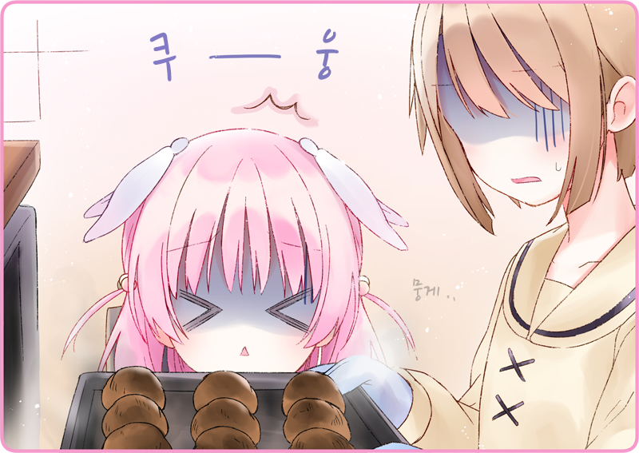

수요일.
그것은 우리에게 특별한 의미를 지닌다. 말하지 않는 필라멘트 전구. 고요하게 시간이 멈춘 실내. 검은 고양이 샤노만이 꼬리를 살랑 흔들며 다가와, 평소의 위치에 먹이가 없는 것을 깨닫고 2층으로 돌아간다.
『정기휴일』
문에 걸린 간판.
오늘은 주에 한 번, 맘 편히 해방되는 휴일인 것이다. 인형인 그녀들에게도 보수·보전할 날은 필요하겠지.
우사미 「……이대로면 되겠지」
그리고 나는 어슴푸레한 주방에 서서 그릇을 안고 있었다. 주물주물 나무 주걱으로 내용물을 휘젓는다. 황금빛 반죽을 들어 올리자, 축 부드럽게 늘어져 내렸다. 다음으로는 짤주머니로 테이블 널빤지 위에 짜내면 된다.
하이자쿠라 「샤노, 밥이에요~」
타닥타닥 2층에서 내려오는 소리.
조용한 가게 안에 하이자쿠라의 목소리가 퍼진다.
우사미 「어라, 방금 2층으로 돌아가던데」
하이자쿠라 「뮤? 이상하네요」
우사미 「옥상에서 햇볕이라도 쬐고 있지 않을까」
하이자쿠라 「그러면 잠깐 다녀올게요」
몸을 구부려, 샤노의 점심을 준비하고 있다. 오늘 메뉴는 서덜을 조린 고양이 밥이다.
하이자쿠라 「그런데 그건 우사 씨의 식사인가요?」
우사미 「이건 요리 공부라고 할까…… 이런, 이거 너무 많이 했네」
하이자쿠라는 신경이 쓰이듯, 주방을 들여다본다.
반죽을 테이블 널빤지에 신중하게 짜내, 형태를 만들어 나간다.
우사미 「흑묘정에 오고 나서, 음료나 생과자는 그럭저럭 만들 수 있게 됐는데…… 구운 과자는 아직 서투르거든. 연습하고 있었어」
하이자쿠라 「구운 과자…… 멋져요!」
우사미 「퍼프 페이스트리야. 잘되면 같이 먹자」
하이자쿠라 「네!」
분무기로 반죽을 촉촉이 적시고, 오븐에 세팅했다.
하이자쿠라는 기대로 눈동자를 반짝이면서, 가만히 곁에서 그런 모습을 바라보고 있었다.
겟카 「굴뚝에서 수상한 냄새가 납니다」
불쑥 고개를 내민 것은 겟카였다.
가슴께에는 샤노를 안고 있다. 둘이서 놀고 있었을지도 모른다.
우사미 「수상한 냄새라니…… 오븐의 열처리가 잘 안 되고 있나」
겟카 「오늘은 정기휴일입니다만」
하이자쿠라 「퍼프 연습을 하고 있대요!」
우사미 「이게 꽤 어렵거든. 레시피 수첩에 의지하고 있어」
전임자가 남겨 준 레시피 수첩을 뒤적이며 바라본다.
메뉴 하나하나에 대해 자세히 지시가 적혀 있어, 이게 없으면 나는 도저히 일할 수 없다.
우사미 「그래도 언제까지고 의존할 수 없으니 말이야」
그래, 주방원으로 독립하기 위해서는.
겟카 「돌아오는 것 같습니다만」
우사미 「어?」
겟카 「주방원」
하이자쿠라 「뮤?」
겟카 「그 레시피 수첩을 만든 전임자입니다」
우사미 「어…… 자, 잠깐만」
겟카 「무슨 일입니까」
우사미 「이 레시피 수첩 만든 사람, 그만둔 거 아니었어?」
겟카 「소유 오너가 바뀌었다…… 그런 이야기는 듣지 않았습니다」
우사미 「잠시 쉬고 있었을 뿐이야?」
겟카 「다른 임무를 하고 있었다는 겁니다」
우사미 「그럼…… 돌아오면 나는 어떻게 되는데?」
겟카 「그건……」
잠시 생각에 잠긴 겟카.
곧이어 평소의 서늘한 시선을 향했다.
겟카 「짤리지 않겠습니까」
우사미 「싫어~~~~~~~~~!」
하이자쿠라 「우사 씨, 그만두지 마세요~~~~!」
우사미 「안 그래도 그만 안 둬! 모처럼 찾아낸 직장이고! 간신히 익숙해졌고! 게다가 게다가……!」
겟카 「침착하십시오」
우사미 「내 나름 노력하고 있는걸. 봐, 이 과자도 완벽하게 구워서 솜씨를 증명해 보일 거야」
겟카 「결정은 오너의 몫입니다」
카라스바 「잠깐, 뭐 하고 있어?」
조금 당황한 모습으로 카라스바 씨가 주방을 들여다보고 있다.
카라스바 「뭔가 타는 냄새 안 나!?」
우사미 「어…… 아앗!?」
오븐 틈새로 푸슉푸슉 연기가 새고 있었다.
당황하여 안을 확인했지만, 때는 이미 늦었다.
매끄러운 황금빛을 내던 퍼프 반죽은 끔찍하게 타 있었다.

우사미 「망했다……」
온도 조절에 실패했는지도 모른다.
겟카가 수상한 냄새가 난다고 했을 때 깨달았어야 했다.
카라스바 「이건 이제 못 먹겠네」
하이자쿠라 「우류류, 마시찌 아나요!」
우사미 「말 끝나기도 전에 집어 먹으면 안 된다니까!」
카라스바 「자, 뱉어. 샤노도 먹지 마!」
우사미 「아, 요리 실력을 보일 생각이었는데……」
겟카 「역시 짤리는 겁니까」
우사미 「싫어~~~!」
＊ ＊ ＊
우사미 「하아……」
긴 그림자를 좇으며 터벅터벅 걷는다.
햇님이 녹을 듯한 모습으로, 야마노테성 뒤로 저물어 간다. 가로등이 의지라곤 되지 않게 명멸하고 있었다.
우사미 「엄청 심오한 세계였구나……」
그로부터 몇 번 양과자를 시험 삼아 구워 봤지만, 조금도 잘 만들어지지 않는다.
그렇다면 2구까지 발길을 뻗쳐서 번창하는 양과자 가게를 엿보아 참고해 보려 했지만, 그곳은 형용할 수 없이 화려한 세계로, 유리 케이스에 진열된 과자는 마치 보석 같은 광택을 내고 있었고, 요컨대 격한 패배감을 느끼고는 이렇게 돌층계 위를 휘청이며 걷고 있는 것이다.
재촉하는 듯한 소리를 울리며 노면 전차가 온다. 마침 퇴근 시간이라, 작은 차체 안으로 사람들이 삼켜져 간다. 왠지 아직 돌아갈 기분은 들지 않았다. 운임만 운임대로 내고 낙담만 얻었다는 사실을 인정하고 싶지 않은 마음도 있었고, 무엇보다 조금 전부터 쭉 배가 비어 있다. 낙담에는 그 이유도 있겠지.
가까이에 있는 양식 가게를 봤지만, 왠지 문턱이 높아 보이고, 지금 주머니 사정으로는 부담스러웠다. 뭘 어떻게 하지도 못하고 우유부단하게 거리를 방황하며 걷고 있자…….
우사미 (……맛있는 냄새다)
무척이나 그리운 국물 냄새가 코끝을 간질였다. 외관은 술집 같지만, 뭐지? 하고 생각할 만한 일은 아니었다. 가게 한편에서 안주를 제공하고 있었던 것이다. 이른바 선술집으로, 자세히 보니 주점으로 사용하는 입구와 선술집으로 사용하는 입구가 분리된 것을 알 수 있었다.
마침 카운터를 닦고 있던 아가씨와 시선이 마주쳤다. 밤하늘을 떠오르게 하는 기모노를 걷어붙이고 있다. 어깨까지 오는 짧은 머릿결이 산뜻하게 흔들린다. 머리 위에는 삼각건. 등에는 담흑색 연돌이 튀어나와 있다.
……연돌?


 「안녕하세요」
「안녕하세요」